Endorsed — Shantara, a sister concern of Hygiene
Shantara leads. “A sister concern of Hygiene” is one line, beside Shantara or centred below it. The Nature Cure line is left out
Horizontal · dark

endorsed-horizontal-dark.svg · Merino, Pearl Bush, white
Stacked · olive

endorsed-stacked-olive.svg · Merino, Pearl Bush, white
Horizontal · cream

endorsed-horizontal-cream.svg · Pine Tree
Stacked · cream

endorsed-stacked-cream.svg · Pine Tree
Co-brand — Shantara and Hygiene
Equal standing, divided by a hairline. For document headers, footers and joint material
Co-brand · dark

cobrand-dark.svg · Merino, Pearl Bush, white
Co-brand · cream

cobrand-cream.svg · Pine Tree
Co-brand · olive

cobrand-olive.svg · Merino, Pearl Bush, white
Co-brand · cream, small
cobrand-cream.svg · Pine Tree, small as a footer
In documents
Lockup at the head, contact at the foot. The same lockup, smaller, runs on continuation pages
Shantara Naturopathy Retreat · Chennamangallur, Kozhikode, Keralam 673602
+91 9553 600 100 · heal@shantara.life · shantara.life
+91 9553 600 100 · heal@shantara.life · shantara.life
Letterhead · co-brand at the head
2 / 6
shantara.life
Continuation page · co-brand running head
Report or brochure · stacked endorsement on Pine Tree
Clear space, sizes and misuse
Clear space is the height of the Shantara capitals, on all four sides of the lockup
1×
Files —
assets/lockups/{endorsed-horizontal, endorsed-stacked, cobrand}-{dark, olive, cream, current}.svgTones —
dark and olive on Merino, Pearl Bush, white · cream on Pine Tree · current for inline SVGMin width, screen / print — endorsed horizontal 420px / 80mm · endorsed stacked 240px / 45mm · co-brand 180px / 35mm
Build —
python scripts/build-lockups.py from the approved wordmark and Hygiene files
✕ Never · recolour Hygiene

A SISTER CONCERN OF
✕ Never · accent ground
Choosing one. Use the endorsed lockup where Shantara speaks and the relationship should be stated: brochures, guest documents, report covers and footers. Use the co-brand lockup where both organisations stand behind the document: joint letters, agreements, medical summaries and shared headers. On continuation pages, run the co-brand lockup smaller as the running head or footer.
Leave the artwork alone. Shantara is the wordmark only, never the flower stacked with it. Hygiene keeps its own tones, never Himalaya or Gold Crayola, and appears without the Nature Cure line. “A sister concern of” and the Hygiene wordmark always share one line. Never stack them over each other; the whole line may sit beside Shantara or centred below it. Do not retype the endorsement line, change its words or move the hairline. One lockup per page head; the rosette band stays clear of it.